ANGY & FRANCO
Cada momento a tu lado es mi Favorito
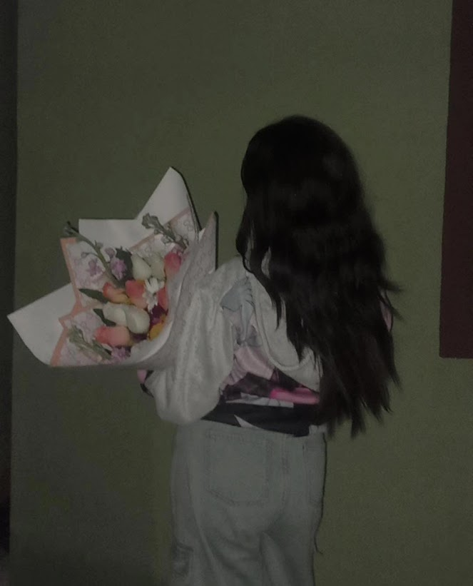
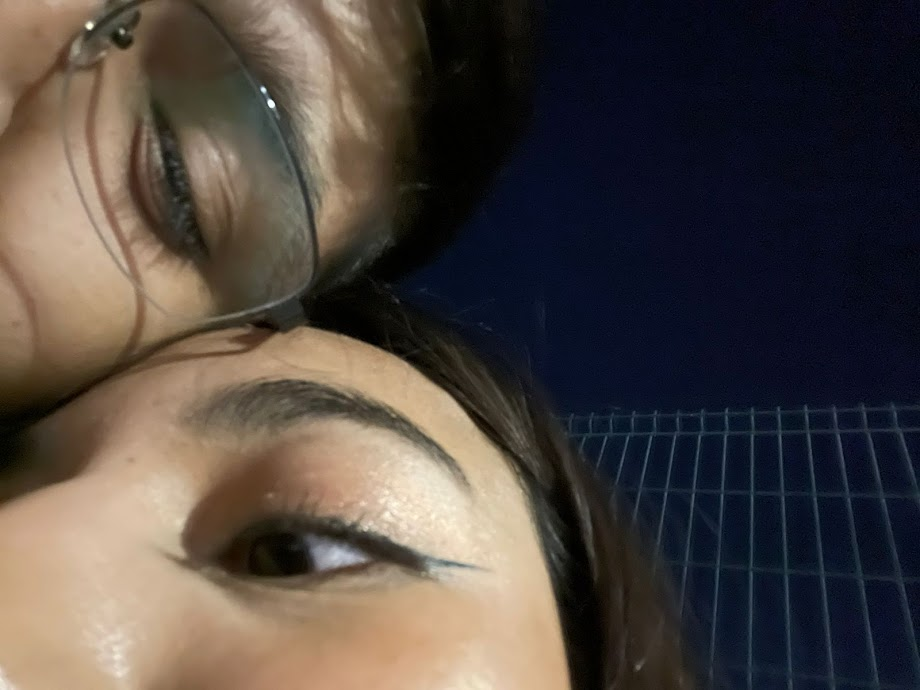
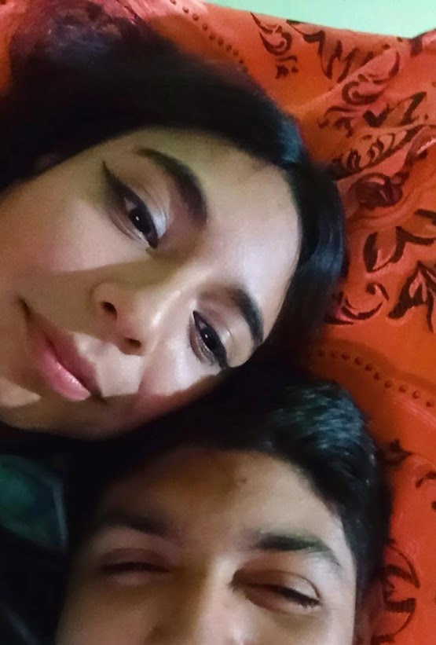
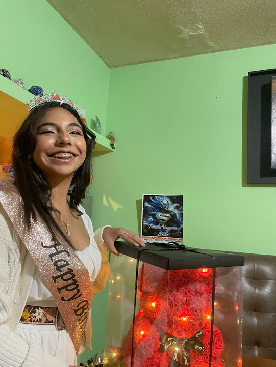
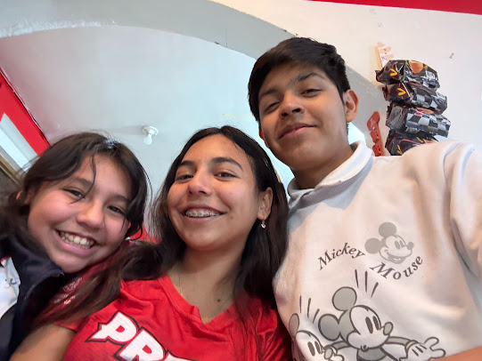
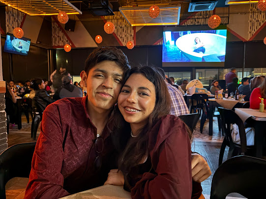
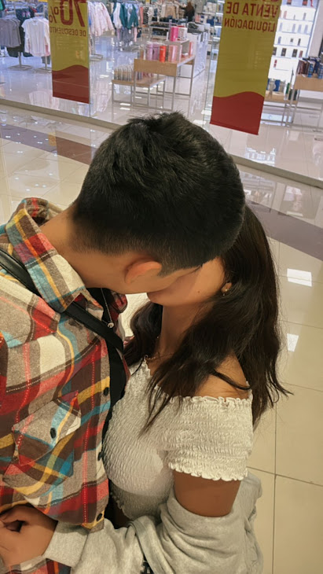
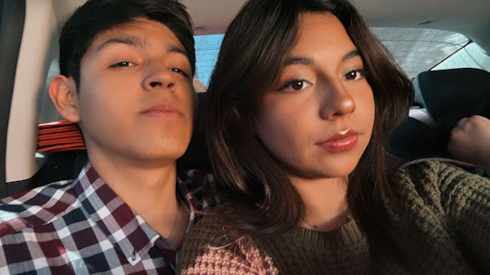
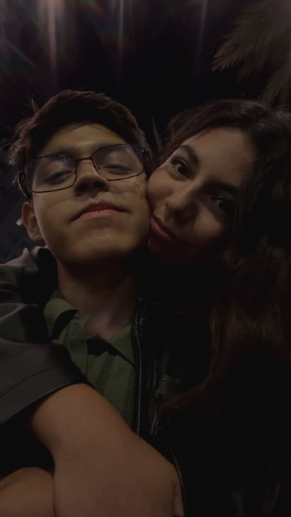
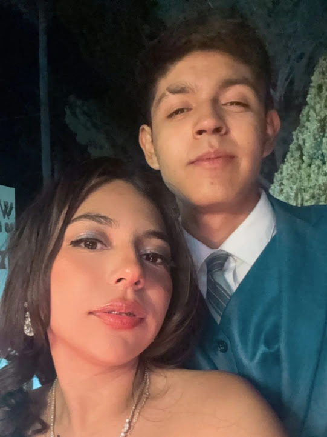
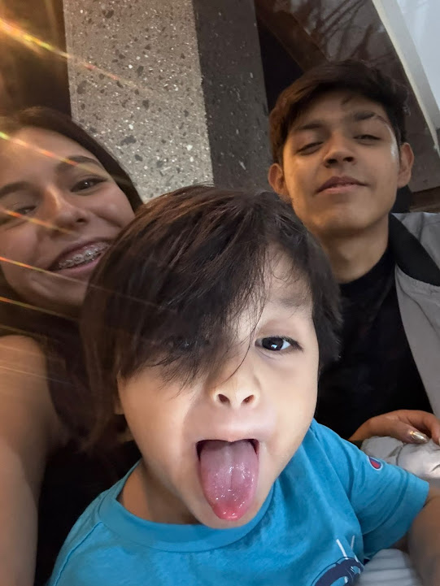
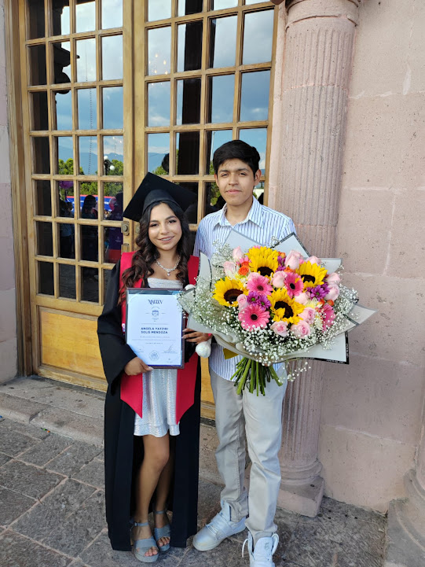
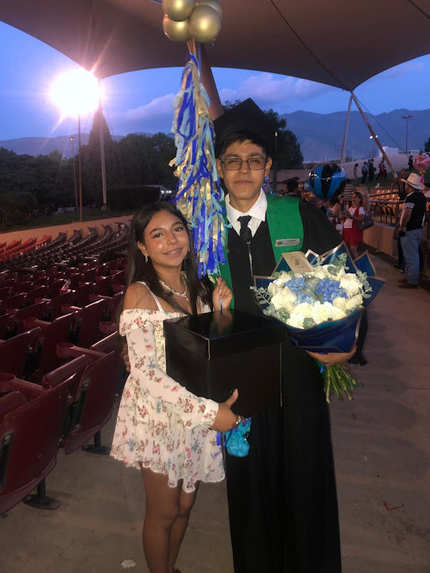
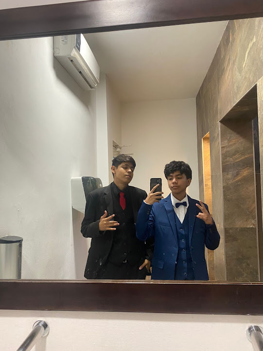
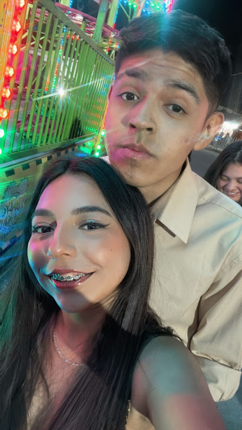
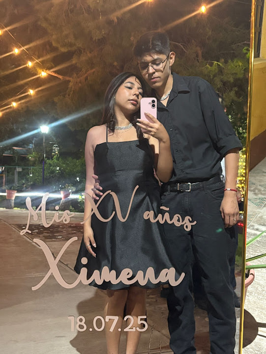
Hoy no quiero empezar diciéndote solo lo rápido que pasa el tiempo, sino lo bonito y lo hermoso que ha sido ver cómo transformaste mi mundo desde que entraste en él mi amor. Dicen que dieciocho meses son solo un fragmento de tiempo, (me lo acabo de inventar) ☝️🤓 jajaja. Pero para mí, este año y medio a tu lado ha sido una vida entera de felicidad, de aprendizaje y de un amor tan enorme que a veces ni siquiera me cabe en el pecho, literalmente 🤡❤️ Quiero que leas esto sabiendo mi vida que tú te has convertido en mi refugio, en ese lugar en el mundo donde puedo ser completamente yo, ya sea mi lado nerd sabeltodo que dice cualquier dato curioso ☝️🤓, solo un niño esperando un abrazo porque esta cansado, un guardián que esta al pendiente de ti las 28 horas del día y 10 días de la semana, solo tu eres la persona con la cual puedo ser yo sin importar que, porque sé que en tus brazos siempre encuentro paz y seguridad de sentime libre ❤️🩹 Me encanta tanto ver cómo nos hemos ido uniendo, cómo tu hermosa sonrisa y cada carcajada se volvio mi sonido favorito y el cómo tu felicidad se convirtió en mi mayor prioridad y enserió amor, me has enseñado a ver la vida con otros ojos, con más luces y colores, con más motivos y esperanzas porque estas tu mi cielo 🌹 Muchas gachas por cada día de este año y medio, gracias por los momentos de silencio donde una mirada tuya 🙄 me lo dice todo, por los días en que el estrés y lo cansado del dia, estudiando, trabajando, etc... nos pesan, pero basta con poder abrazarte verte a tus ojitos tan preciosos que amo demasiado 💖 Eres una mujer increíble y mi hermosa, elegante, inteligente, encantadora, amable, considerada, fuerte, valiente, creativa, brillante, gentil, humilde, generosa, apasionada, sabia, divertida, leal, confiable, elegante, radiante, tranquila, segura, cálida, compasiva, ingeniosa, aventurera, respetuosa, sincera, magnética, audaz, articulada, empática, inspiradora, honesta, paciente, poderosa, atenta, edificante, con clase, amigable, confiable, ambiciosa... déjame agarro aire mi amor 😚 seguimos... intuitiva, talentosa, solidaria, con los pies en la tierra, decidida, carismática, extraordinaria, digna de confianza, noble, digna, perceptiva, innovadora, refinada, considerada, equilibrada, de mente abierta, compuesta, imaginativa, atenta, optimista, virtuosa, de corazón noble, elocuente, ingeniosa, profunda, filosófica, intrépida, cariñosa, expresiva, emocionalmente inteligente, ingeniosa, encantadora, fascinante, aguda, desinteresada, motivada, asertiva, auténtica, vibrante, juguetona, observadora, hábil, de espíritu generoso, práctica, reconfortante, valiente, Sabia de corazón, entusiasta, confiable, discreta, duradera, educada, serena, madura, de buen gusto 😍, alegre, comprensiva, genuina, brillante de mente, alentadora, equilibrada, magnética, dinámica, radiante, de espíritu radiante, conmovedora, de corazón radiante, perspicaz, de alma creativa, con mentalidad justa, de corazón confiable, tierna, de mente edificante, perseverante, angelical, con los pies en la tierra, de corazón dorado, de espíritu gentil, inteligente, de corazón valiente, cortés, armoniosa, de mente leal, de alma hermosa, tranquila, de corazón sincero, de mente respetuosa, de voz reconfortante, de mente segura, emocionalmente fuerte, de alma respetuosa, de corazón imaginativo, protectora, de mente noble, de alma segura, de ojos sabios, cariñosa, de ojos expresivos, con un corazoncito brillante que me enamoran a niveles que arrevazan el número pi (π) Qué privilegio tan grande tengo de caminar a tu lado y de ver de cerca lo maravillosa que eres y de ser yo quien tenga la fortuna de amarte como crazy kid 😵💫 Este aniversario de año y medio no es solo una fecha en el calendario mamor, es el testimonio de lo que somos 💞 A lo largo de estos dieciocho meses hemos construido un amor real y elegirte cada mañana ha sido la decisión más hermosa de mi vida, porque en ti encontré no solo a mi mejor amiga, a mi confidente, mi compañera, mi cómplice, mi dúo, mi loba, mi bailarina capuñina jajajaja meno ya me pase. Pero sobre todo a la persona con la que quiero compartir absolutamente todo lo que soy porque eres tu, eres mi novia 💗 Quiero que sepas mi amor me emociona el mirar hacia adelante y saber que este año y medio es apenas el hermoso prólogo de un libro larguísimo que nos falta por escribir y estoy más que listo para seguir creciendo a tu lado, para celebrar cada uno de tus triunfos, para recordarte lo valiosa que eres cuando lo olvides y para sostener tu mano en cada paso de este camino que nos falta por recorrer. No importa cuántos retos vengan, cuántas responsabilidades o cuán ocupados estemos porque mi corazón siempre va a tener tu nombre y apellido grabado y mis brazos siempre van a ser tu hogar listos para resivirte con un abrazo de OSO!! 🐻 mi niña preciosa 💖 Gracias por regalarme tu tiempo, tu confianza y tu amor tan puro y sincero. Gracias por ser mi presente, mi recordatorio diario de lo bonito que es vivir y la razón de mis sonrisas por la motivación de cada día de ser mejor, eres, y por siempre serás, mi persona favorita en todo y todos los universos, mi meta y mi destino al que quiero llegar junto a ti 💕 TE AMOO DEMASIADO!! con una profundidad que las palabras no llegan a describir lo que sinto por ti mi amor 🌻 FELIZ AÑO Y MEDIO MI PANQUECITO!! Eres todo lo que siempre soñé y ahora eres mi realidad más preciosa 🌹❤️"
¡Felices 1 año y 6 meses! TE AMO HOY Y SIEMPRE. ❤️
Este libro apenas se está escribiendo... y quiero que tenga miles de páginas más contigo. Estas lista para una nueva aventura? 🥰
💍✨🐾